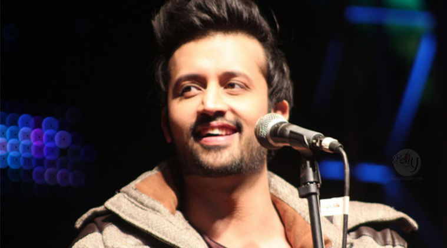

Year Nominee/work Award Result Indus Music Awards 2005 "Aadat" combined awards with Jal Best Lyrics Won Best Song Won Best Composition Won Sahara Sangeet Awards 2005 Best Playback Singer Won Best Debut Singer Won The Musik Awards 2006 Most Wanted Male Nominated 2008 Won Lux Style Awards 2005 Jal Pari Best Album Won 2007 Doorie Best Album Won 2008 Police Dress Most Well Dressed Celebrity Won Meri Kahani Best Album Nominated 2012 "Hona Tha Pyaar" – Bol Song of the Year Nominated Best Original Sound Track Won 2013 Music Icon of the year Won MTV Brrr Music Awards 2009 "Hungami Halaat" Best Rock Song Nominated Best Singer (Male) Nominated Government of Pakistan 2008 Tamgha-e-Imtiaz (Medal of Distinction) Won Filmfare Awards 2006 "Woh Lamhe" – Zeher Filmfare Award for Best Male Playback Singer Nominated 2007 "Tere Bin" – Bas Ek Pal Nominated 2010 "Tu Jaane Na" – Ajab Prem Ki Ghazab Kahani Nominated 2016 "Jeena Jeena" – Badlapur Nominated 2017 "Tere Sang Yaara" – Rustom Nominated Lycra MTV Style Awards 2007 Most Stylish Person (Music) Won IIFA Awards 2006 "Woh Lamhe" – Zeher IIFA Award for Best Male Playback Singer Nominated 2009 "Pehli Nazar Mein" – Race Nominated 2010 "Tu Jaane Na" – Ajab Prem Ki Ghazab Kahani Nominated Screen Awards 2009 "Pehli Nazar Main" – Race Best Playback Singer (Male) Nominated Guild Awards 2014 "Jeene Laga Hoon" – Ramaiya Vastavaiya Best Playback Singer (Male) Nominated Zee Cine Awards 2014 "Jeene Laga Hoon" – Ramaiya Vastavaiya Best Playback Singer (Male) Nominated GiMA Awards 2010 "Tu Jaane Na" – Ajab Prem Ki Ghazab Kahani Best Playback Singer (Male) Nominated BIG Star Entertainment Awards 2013 "Piya O Re Piya" – Tere Naal Love Ho Gaya Best Playback Singer (Male) Nominated MTV IGGY 2011 Best New Band in the World Nominated Pakistan Media Awards 2010 Best Singer (Male) Won 2011 Nominated 2012 "Mustafa" – Bol Best Film Actor Nominated "Hona Tha Pyaar" – Bol Best Playback Singer Nominated The BrandLaureate International Awards 2013 Brand Personality Won Big Apple Music Awards 2014 Best Male Artist of Pakistan Won 2015 Won Most Popular Male Artist (International) Won
